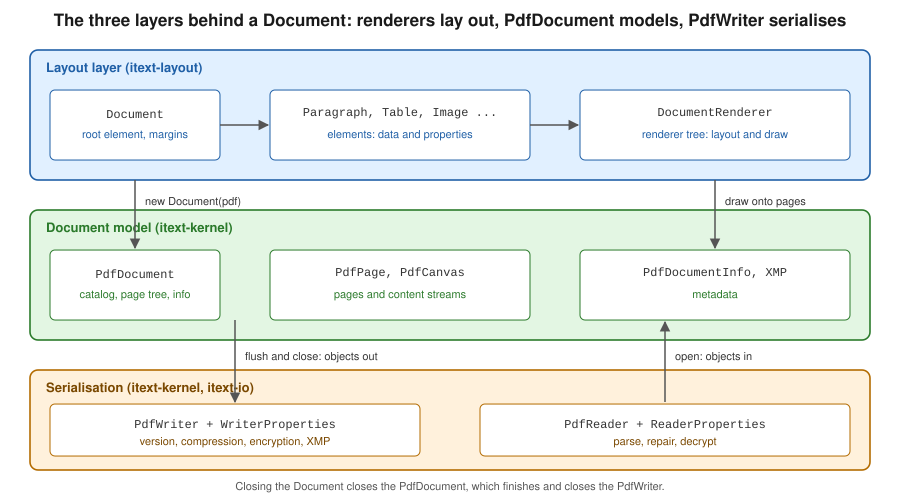

Document Lifecycle
|
This content was generated with the assistance of AI and should be verified against the official documentation before being relied on in production. |
Every iText program, whatever it draws, goes through the same four steps: open an output, build a document model on top
of it, add content, and close everything in the right order. Getting the lifecycle right is what separates a file that
opens in every viewer from one that is silently truncated, and it is also where iText 7 and later differ most from the
old books and tutorials. This page follows that lifecycle for the Bookshelf Billing invoice: the writer and its
properties, reading an existing file, the PdfDocument and its metadata, the layout Document with page sizes and
margins, and finally closing and flushing. Versions are stated as of 2026-10-09: iText Core 9.8.0 on Java 21, licensed
under the AGPLv3 or under a commercial licence (see the Introduction & Approaches page of this section for the
consequences). All the examples on this page were compiled and run against exactly that version.
Three layers, one lifecycle
An iText 9 document is three objects stacked on top of each other, and each one is created from the one below it.

-
PdfWriter(andPdfReaderfor existing files) lives in the serialisation layer. It knows about bytes: the output stream, the PDF version, compression, encryption and the cross-reference table. It knows nothing about pages. -
PdfDocumentlives in thekernelmodule and is the in-memory model of the file: the catalog, the page tree, the document information dictionary, the XMP packet and the registry of every indirect object. Pages and low-level drawing (PdfPage,PdfCanvas) belong to this layer. -
Documentlives in thelayoutmodule and is the entry point of the high-level API. It owns a root renderer, accepts elements such asParagraphandTable, lays them out and draws them onto the pages of thePdfDocument. The renderer tree it builds is the subject of the Renderers & Custom Layout page of this section.
Each layer is optional from the top: a program that only copies pages needs no Document, and a program that only draws
at fixed coordinates can use PdfDocument and PdfCanvas alone. The rule that never changes is the order of
construction and of closing.
Why the old model is gone (O2)
The introductory chapters of the classic iText book show a single Document object that is handed to a static factory,
PdfWriter.getInstance(document, outputStream), and then opened with document.open(). The same Document could be
paired with RtfWriter2 or HtmlWriter to produce RTF or HTML from one code path. That model belongs to iText 1 and 2
(com.lowagie.text.*) and is not in iText 7, 8 or 9. The current approach is:
-
the writer is a plain constructor,
new PdfWriter(...), and is passed to aPdfDocument; there is nogetInstanceand noopen()call, a document is open from the moment it is constructed; -
the layout
Documentis a separate class incom.itextpdf.layout, built from aPdfDocument, and it only targets PDF; -
RTF and HTML output were dropped; HTML is an input format (pdfHTML) rather than an output format, and Word output is outside the library.
The mapping is therefore PdfWriter to PdfDocument to layout Document, which is the order of the three layers above.
The old classes survive only in OpenPDF, the LGPL and MPL community fork of the iText 2 API, which is a different
library with a different package (org.openpdf since its 3.0 release). The iText KB documents the replacement in the
jump-start tutorial, chapter 1 and the changes
between major versions in Breaking changes for iText 9.
The smallest complete lifecycle
The minimal program builds the three layers in order inside one try-with-resources statement and adds a paragraph.
Closing happens in reverse order automatically: first the Document, then the PdfDocument, then the PdfWriter.
Maven coordinates (first use on this page). itext-core is a POM aggregator, so it is declared with
<type>pom</type>; the Bouncy Castle adapter is needed only for signing and encryption, the pages that use them
restate it. iText is licensed under the AGPLv3 or commercially.
<dependency>
<groupId>com.itextpdf</groupId>
<artifactId>itext-core</artifactId>
<version>9.8.0</version>
<type>pom</type>
</dependency>package com.example.billing;
import com.itextpdf.kernel.pdf.PdfDocument;
import com.itextpdf.kernel.pdf.PdfWriter;
import com.itextpdf.layout.Document;
import com.itextpdf.layout.element.Paragraph;
import java.io.IOException;
import java.nio.file.Files;
import java.nio.file.Path;
public class MinimalInvoice {
public static void main(String[] args) throws IOException {
Path target = Path.of("target", "invoice-1.pdf");
Files.createDirectories(target.getParent());
try (PdfWriter writer = new PdfWriter(target.toString());
PdfDocument pdf = new PdfDocument(writer);
Document document = new Document(pdf)) {
document.add(new Paragraph("Bookshelf Billing, invoice 2026-0042"));
}
}
}The program produces a one-page A4 file with PDF version 1.7, which are the defaults of iText 9.8. The code derives from
the iText 7 jump-start tutorial, chapter 1 and the
API pages of PdfDocument and
Document. The tutorial shows an older
constructor style and a document.close() call at the end; in current code the resources are closed by the
try-with-resources block, which is what the compiled example uses.
Java 21 idioms for the lifecycle (O28)
The classic examples were written for JDK 1.4: raw FileOutputStream handling, a finally block that closes the
document, string concatenation for text and parallel arrays for data. Java 21 offers a better vocabulary for the same
lifecycle, and the rest of this page uses it.
-
try-with-resourceswith the writer, thePdfDocumentand theDocumentdeclared in the resource list. All three implementAutoCloseable, are closed in reverse declaration order, and an exception in the body no longer leaves a half-written file open. -
Path.ofandFilesinstead ofjava.io.File, andvarfor the obvious local types where it shortens a long generic or builder chain. -
Records for the document inputs, such as an invoice header, instead of mutable beans or parallel arrays.
-
Text blocks and
String.formattedfor multi-line paragraph text instead of concatenation with\n. -
ByteArrayOutputStreamor a streaming response body as the output target in a web service, not a temporary file, as shown in the Spring Boot page of this section.
PdfWriter and WriterProperties
PdfWriter is constructed from a file name or an OutputStream (open a Files.newOutputStream(Path) for the
java.nio.file style). The overloads taking a WriterProperties configure how the file is written. The class has a
fluent API, so a configuration is a single expression. The properties that matter for most programs are:
-
setPdfVersion(PdfVersion)selects the header version. The default is PDF 1.7;PdfVersion.PDF_2_0produces a PDF 2.0 file (ISO 32000-2). The standards page of this section explains what PDF 2.0 changes and removes. -
setFullCompressionMode(boolean)stores the page tree and other structural objects in compressed object streams and the cross-reference data in a cross-reference stream. The result is a noticeably smaller file for documents with many small objects. It requires at least PDF 1.5, and it is off by default. -
setCompressionLevel(int)sets the Deflate level for content streams. -
addXmpMetadata()makes iText write an XMP metadata packet synchronised with the document information dictionary, which PDF 2.0 and PDF/A expect. -
setStandardEncryption(...)andsetPublicKeyEncryption(...)turn on encryption; they belong to the Encryption & Permissions page. -
useSmartMode()lets iText detect duplicate objects (identical images, fonts) when copying pages and write them once.
package com.example.billing;
import com.itextpdf.kernel.geom.PageSize;
import com.itextpdf.kernel.pdf.PdfDocument;
import com.itextpdf.kernel.pdf.PdfDocumentInfo;
import com.itextpdf.kernel.pdf.PdfVersion;
import com.itextpdf.kernel.pdf.PdfWriter;
import com.itextpdf.kernel.pdf.WriterProperties;
import com.itextpdf.layout.Document;
import com.itextpdf.layout.element.Paragraph;
import java.io.ByteArrayOutputStream;
import java.io.IOException;
public class InvoiceRenderer {
record InvoiceHeader(String number, String customer) { }
static byte[] render(InvoiceHeader header) throws IOException {
var out = new ByteArrayOutputStream();
var properties = new WriterProperties()
.setPdfVersion(PdfVersion.PDF_2_0)
.setFullCompressionMode(true)
.addXmpMetadata();
try (var writer = new PdfWriter(out, properties);
var pdf = new PdfDocument(writer)) {
PdfDocumentInfo info = pdf.getDocumentInfo();
info.setTitle("Invoice " + header.number());
info.setAuthor("Bookshelf Billing");
info.setSubject("Invoice for " + header.customer());
info.setKeywords("invoice, bookshelf");
info.setCreator("Bookshelf Billing service");
info.setMoreInfo("InvoiceNumber", header.number());
try (var document = new Document(pdf, PageSize.A4)) {
document.setMargins(54, 54, 54, 54);
document.add(new Paragraph("""
Invoice %s
Customer: %s""".formatted(header.number(), header.customer())));
}
}
return out.toByteArray();
}
public static void main(String[] args) throws IOException {
byte[] bytes = render(new InvoiceHeader("2026-0042", "Alice Example"));
java.nio.file.Files.write(java.nio.file.Path.of("target", "invoice-2.pdf"), bytes);
System.out.println(new String(bytes, 0, 8) + " " + bytes.length);
}
}Running it prints the header %PDF-2.0 followed by the size, and the file reads back as PDF 2.0 with the title set.
The example derives from the API pages of
WriterProperties and
PdfWriter.
Two practical points follow from how the example is built. The writer properties must be given when the writer is
created: they cannot be changed afterwards, because the header and the object-stream strategy are decided before the first
object is written. And the output target should match the delivery mechanism. In a Spring Boot service the
ByteArrayOutputStream above is the simple choice for small documents, and a StreamingResponseBody writing straight to
the response is the choice for large ones; the Getting Started with Spring Boot page of this section shows both.
PdfReader and ReaderProperties
PdfReader is the mirror image of PdfWriter: it wraps an input (file name, InputStream, RandomAccessSource) and
parses the cross-reference data and trailer when the PdfDocument is opened. A ReaderProperties object carries the
decryption credentials: a user or owner password, or a certificate and private key for public-key encrypted files. A
PdfDocument built from a reader alone is read-only, which is enough to inspect metadata or count pages. Combining a
reader and a writer in one PdfDocument opens the stamping mode that modifies an existing file; that mode, and the
StampingProperties that control it, are covered in the Manipulating Existing PDFs page of this section.
package com.example.billing;
import com.itextpdf.kernel.pdf.PdfDocument;
import com.itextpdf.kernel.pdf.PdfReader;
import com.itextpdf.kernel.pdf.ReaderProperties;
import java.io.IOException;
import java.nio.charset.StandardCharsets;
import java.nio.file.Path;
public class InspectInvoice {
public static void main(String[] args) throws IOException {
Path source = Path.of(args[0]);
// Read the password from configuration or an environment variable, never from source code.
String password = System.getenv("BILLING_PDF_PASSWORD");
var properties = new ReaderProperties();
if (password != null) {
properties.setPassword(password.getBytes(StandardCharsets.UTF_8));
}
try (var reader = new PdfReader(source.toString(), properties);
var pdf = new PdfDocument(reader)) {
System.out.println("version = " + pdf.getPdfVersion());
System.out.println("pages = " + pdf.getNumberOfPages());
System.out.println("title = " + pdf.getDocumentInfo().getTitle());
System.out.println("size = " + pdf.getPage(1).getPageSize());
System.out.println("custom = " + pdf.getDocumentInfo().getMoreInfo("InvoiceNumber"));
}
}
}Run against the file produced by the previous example, it prints PDF-2.0, one page, the title, 595.0x842.0 and the
custom InvoiceNumber entry. The password comes from an environment variable placeholder; in production it would come
from a secrets manager, see Secrets Manager and KMS. The example derives from
the API pages of
PdfReader and
ReaderProperties.
PdfReader is lenient by default (PdfReader.DEFAULT_STRICTNESS_LEVEL is LENIENT): it recovers from common damage
and rebuilds a broken cross-reference table instead of failing. Calling
setStrictnessLevel(PdfReader.StrictnessLevel.CONSERVATIVE) on the reader makes it throw an exception when the file
contradicts the specification, which suits validation pipelines that must reject malformed input, and
setUnethicalReading(true) lets iText open an encrypted file without the owner password, which is only
appropriate for files you are entitled to process.
PdfDocument: pages and metadata
PdfDocument is where the document-level facts live. Its most used members are:
-
addNewPage(),addNewPage(PageSize)andaddPage(PdfPage)append pages, andgetPage(n)andgetNumberOfPages()read them back. Page numbers start at 1. -
setDefaultPageSize(PageSize)fixes the size used for pages the layout engine creates automatically. The default is A4 (595 x 842 points, with one point being 1/72 inch). -
getDocumentInfo()returns thePdfDocumentInfo, the wrapper of the document information dictionary:setTitle,setAuthor,setSubject,setKeywords,setCreatorandsetMoreInfo(key, value)for arbitrary entries such as an invoice number. The producer entry is filled in by iText itself. -
getXmpMetadata()andsetXmpMetadata(...)give access to the XMP packet, andgetCatalog()to the document catalog for viewer preferences, page labels and the language, which the PDF/A and PDF/UA page of this section needs. -
isClosed(),close()andflush-related methods control the end of the lifecycle, discussed below.
Metadata must be set before the document is closed. For a reader-and-writer pair it is written when the document closes,
which is why the example above sets the title inside the try block, before the closing brace of the outer resource. In
PDF 2.0 the document information dictionary is deprecated in favour of XMP except for the creation and modification
dates, so the combination addXmpMetadata() on the writer plus PdfDocumentInfo setters on the document is the
portable choice: iText keeps the two representations consistent. The API reference is the
PdfDocumentInfo page.
The layout Document: page sizes and margins
The layout Document is constructed from the PdfDocument, optionally with a page size, and an immediateFlush flag
described in the next section. The default constructor uses the default page size of the PdfDocument. The page size
and margins are handled at three levels, from broad to narrow:
-
new Document(pdf, PageSize.A4)orpdf.setDefaultPageSize(...)sets the size for pages created automatically.PageSizeprovides the ISO A and B series,LETTER,LEGAL,TABLOIDand other constants (TABLOIDis 792 x 1224 points);PageSize.A4.rotate()returns the landscape variant, andnew PageSize(612, 792)builds a custom one in points. -
document.setMargins(top, right, bottom, left)sets the page margins in points for all pages the document creates, andsetTopMarginand the three other single-side setters adjust one side. The order of the four-value method is clockwise from the top, as in CSS. -
new AreaBreak(AreaBreakType.NEXT_PAGE)ends the current page, andnew AreaBreak(PageSize)starts the next page with a different size and orientation. This is how a document mixes an A5 cover with a Letter appendix.
package com.example.billing;
import com.itextpdf.kernel.geom.PageSize;
import com.itextpdf.kernel.pdf.PdfDocument;
import com.itextpdf.kernel.pdf.PdfPage;
import com.itextpdf.kernel.pdf.PdfReader;
import com.itextpdf.kernel.pdf.PdfWriter;
import com.itextpdf.layout.Document;
import com.itextpdf.layout.element.AreaBreak;
import com.itextpdf.layout.element.Paragraph;
import com.itextpdf.layout.properties.AreaBreakType;
import java.io.ByteArrayInputStream;
import java.io.ByteArrayOutputStream;
import java.io.IOException;
public class PageSizesDemo {
public static void main(String[] args) throws IOException {
var out = new ByteArrayOutputStream();
try (var pdf = new PdfDocument(new PdfWriter(out))) {
pdf.setDefaultPageSize(PageSize.A5.rotate());
try (var document = new Document(pdf)) {
document.setMargins(36, 36, 36, 36);
document.add(new Paragraph("Cover page, A5 landscape"));
document.add(new AreaBreak(AreaBreakType.NEXT_PAGE));
document.add(new Paragraph("Second page"));
document.add(new AreaBreak(new PageSize(612, 792)));
document.add(new Paragraph("Third page, US Letter"));
}
}
try (var pdf = new PdfDocument(new PdfReader(new ByteArrayInputStream(out.toByteArray())))) {
for (int i = 1; i <= pdf.getNumberOfPages(); i++) {
PdfPage page = pdf.getPage(i);
System.out.println(i + " " + page.getPageSize());
}
}
}
}The program prints 595.0x420.0 for the first two pages and 612.0x792.0 for the third. The example derives from the
API pages of Document and
PageSize. Elements, the properties
that style them and the AreaBreak family are covered in the Layout Elements page of this section.
A detail that surprises people: the Document was closed inside the outer PdfDocument block, which already closes the
underlying PdfDocument. The outer resource is closed again at the end of the block, and iText tolerates this
double close without error. Using only one try-with-resources with all three resources, as in the first example, avoids
the question.
Closing and flushing
Nothing reaches the output until the objects of the PdfDocument are flushed, and the file is complete only after
close() has written the cross-reference table and the trailer. Three rules cover almost every use.
Close in reverse order, and close the outermost object that you opened. Calling Document.close() renders any
remaining content, then closes the PdfDocument, which finishes the file and closes the PdfWriter and so the output
stream. Closing the PdfDocument without closing the Document skips the last layout step, so content the layout engine
was still holding back is not drawn. try-with-resources guarantees the correct order.
A closed document cannot be reused. After close() every mutating call, such as addNewPage(), throws a
PdfException saying that the document was closed and it is impossible to execute the action; isClosed() lets a
caller test it. A new PdfWriter is needed for each output file, because a writer is bound to one document.
Closing is what writes the metadata, the page labels and the signatures-in-progress. Anything that has to appear in the file, from the page-numbering placeholder of a footer to the title, must be set before the close call. The page events page of this section builds on this when it fills a "page X of Y" placeholder at close time.
Immediate flush and the memory cost of large documents (O2)
A PdfDocument normally keeps every indirect object in memory until the file is closed, because later objects may
refer to earlier ones. For a ten-page invoice that is irrelevant; for a 5,000-page statement it is the difference between
a service that works and one that runs out of heap. iText offers two levels of control, and both are visible in the
lifecycle.
-
Layout level: the
immediateFlushflag ofDocument. By default (true) the layout engine writes each page as soon as it is laid out and releases it.new Document(pdf, pageSize, false)defers drawing untildocument.close()or an explicitdocument.relayout(). Deferred flushing costs memory but allowsrelayout(), which re-runs the layout of the whole document after a change, such as a known total page count. The default oftrueis the right choice unless a program needs a second layout pass. -
Kernel level:
PdfPage.flush()andPdfObject.flush(). When working directly withPdfDocumentandPdfCanvas, callingpage.flush()after a page is finished writes it out and drops its objects, as the second program below shows. A flushed object can no longer be modified, so flush only what is complete.
The first program writes the same 2,000-line statement with and without immediate flush. The second adds 500 pages at the kernel level and flushes each one.
package com.example.billing;
import com.itextpdf.kernel.geom.PageSize;
import com.itextpdf.kernel.pdf.PdfDocument;
import com.itextpdf.kernel.pdf.PdfWriter;
import com.itextpdf.layout.Document;
import com.itextpdf.layout.element.Paragraph;
import java.io.IOException;
import java.io.OutputStream;
import java.nio.file.Files;
import java.nio.file.Path;
public class FlushModes {
static void write(OutputStream out, boolean immediateFlush, int lines) throws IOException {
try (var pdf = new PdfDocument(new PdfWriter(out));
var document = new Document(pdf, PageSize.A4, immediateFlush)) {
for (int i = 1; i <= lines; i++) {
document.add(new Paragraph("Line %d of the monthly statement".formatted(i)));
}
if (!immediateFlush) {
// Content is still held back, so the layout can be redone.
document.relayout();
}
}
}
public static void main(String[] args) throws IOException {
Path a = Path.of("target", "flush-immediate.pdf");
Path b = Path.of("target", "flush-deferred.pdf");
try (OutputStream o = Files.newOutputStream(a)) { write(o, true, 2000); }
try (OutputStream o = Files.newOutputStream(b)) { write(o, false, 2000); }
System.out.println(Files.size(a) + " " + Files.size(b));
}
}Both runs produce valid files of similar size (39,360 and 42,664 bytes on the machine used for this page). The memory difference is not in the file but in the heap while it is produced: with the default, the pages of a
long run leave memory as they are written, with false they all stay until the close. The behaviour is described in the
iText KB article
When is the content flushed to a PDF file by iText?.
package com.example.billing;
import com.itextpdf.io.font.constants.StandardFonts;
import com.itextpdf.kernel.font.PdfFontFactory;
import com.itextpdf.kernel.pdf.PdfDocument;
import com.itextpdf.kernel.pdf.PdfPage;
import com.itextpdf.kernel.pdf.PdfWriter;
import com.itextpdf.kernel.pdf.canvas.PdfCanvas;
import java.io.IOException;
import java.io.OutputStream;
import java.nio.file.Files;
import java.nio.file.Path;
public class KernelFlush {
public static void main(String[] args) throws IOException {
Path target = Path.of("target", "flush-pages.pdf");
try (OutputStream out = Files.newOutputStream(target);
var pdf = new PdfDocument(new PdfWriter(out))) {
var font = PdfFontFactory.createFont(StandardFonts.HELVETICA);
for (int i = 1; i <= 500; i++) {
PdfPage page = pdf.addNewPage();
new PdfCanvas(page)
.beginText()
.setFontAndSize(font, 12)
.moveText(36, 800)
.showText("Page " + i)
.endText()
.release();
// The page is complete: write it out and let go of its objects.
page.flush();
}
}
System.out.println(Files.size(target));
}
}This example derives from the same KB article and from the API page of
PdfDocument. The performance angle
(large tables, font reuse, measuring heap) continues in the Testing & Performance page of this section, and the
table-specific variant of immediate flush, where new Table(widths, true) is flushed in chunks, is in the Tables page.
A caveat about how to read the KB material: its tutorials were written across iText 7 and 8, so some snippets use class or method names that have moved in 9.x. When a tutorial and the compiled behaviour differ, this page follows the compiled behaviour of 9.8.0.
Common mistakes
Most lifecycle bugs fall into a short list, and each one has a cause in the model above.
-
An empty or truncated file. The close call never ran, usually because the
PdfDocumentwas not closed or an exception was swallowed before the closing block. Declaring all resources intry-with-resourcesremoves the cause. -
Content missing from the last page. The
PdfDocumentwas closed while theDocumentstill had pending content. Close theDocumentfirst, or let the resource list do it. -
"Document was closed" exceptions. A helper kept a reference to a
PdfDocumentand called it after the owner closed it. Treat the document as scoped to the method that opened it, and pass bytes or streams out instead. -
Setting properties too late.
WriterProperties, the PDF version and encryption are fixed when the writer is created; metadata is set on the document before the close. -
Writing to the HTTP response and also closing it. Closing the
PdfWritercloses the underlying stream. When the stream belongs to the servlet container, wrap it with a non-closing decorator or write to memory first, as described in the Getting Started with Spring Boot page. -
Reusing a writer. One writer, one document: create a new
PdfWriterfor each output.
What comes next
With the lifecycle in place, the Layout Elements page of this section fills the Document with paragraphs, images and
lists, the Tables page adds the invoice lines, and the Page Events page adds the footer with page numbers. Manipulating an
existing file reuses the reader and writer from this page, and the encryption and signing pages build on
WriterProperties and ReaderProperties. The earlier pages of this section explain the surrounding context:
How a PDF file works describes what close() writes (the
cross-reference table and trailer), and
PDF standards and conformance explains the PDF 2.0 and
XMP choices made in the writer properties above.